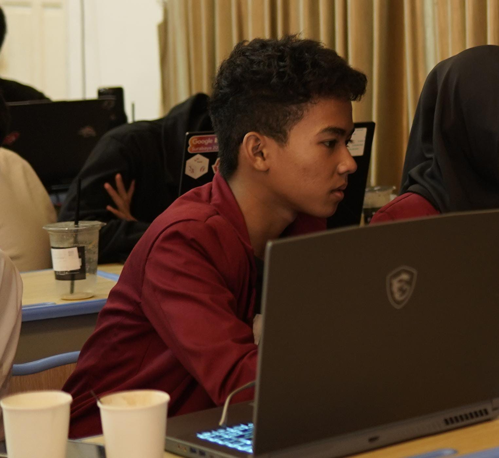
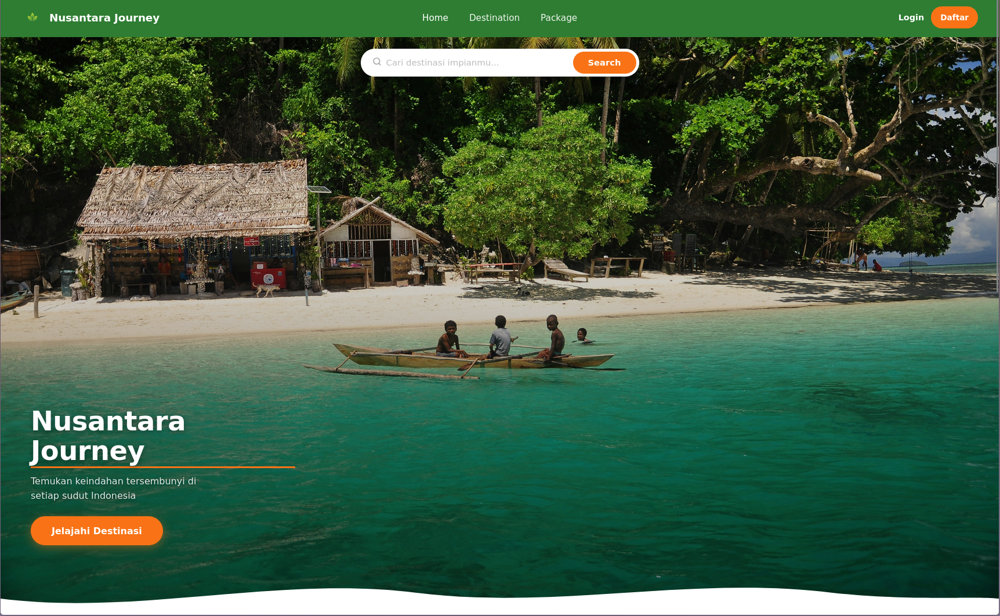
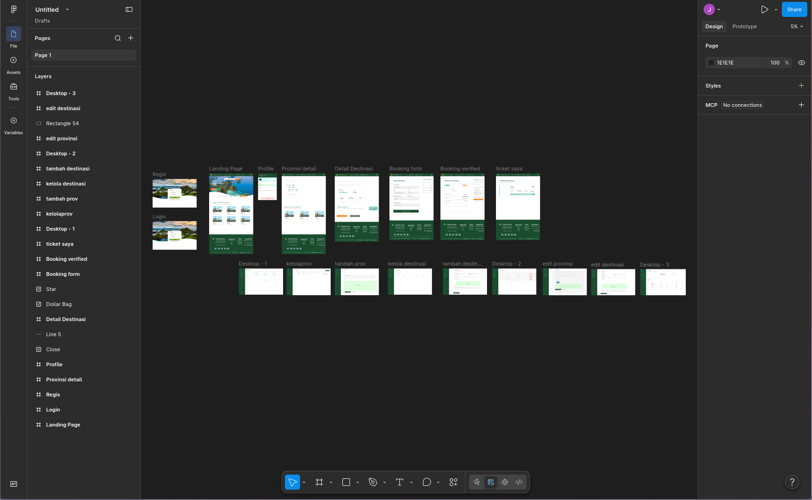
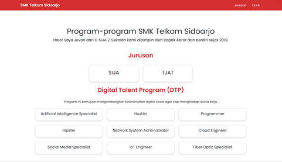

Jevon Agnibrata
Siswa SMK Telkom Sidoarjo
Saya siswa kelas X SIJA 2 yang tertarik dengan pengembangan web dan desain UI/UX. Senang membangun sesuatu yang bermanfaat dari kode.
Saya siswa kelas X SIJA 2 yang tertarik dengan pengembangan web dan desain UI/UX. Senang membangun sesuatu yang bermanfaat dari kode.

Saya berusia 15 tahun dan saat ini duduk di bangku kelas X SIJA 2 SMK Telkom Sidoarjo. Jurusan saya adalah SIJA (Sistem Informasi Jaringan dan Aplikasi).
Saya mulai tertarik dengan coding sejak masuk SMK. Saat ini saya sedang belajar membuat website mulai dari tampilan depan hingga bagian belakangnya.
Jurusan SIJA (Sistem Informasi Jaringan dan Aplikasi). Fokus pada pemrograman web, jaringan komputer, dan basis data.
Masa SMP yang membuka minat saya pada teknologi dan komputer.
Awal perjalanan pendidikan formal saya.

Website pariwisata Indonesia dengan fitur booking tiket. Saya membangunnya sebagai fullstack developer menggunakan PHP dan MySQL.

Desain UI/UX lengkap untuk website travel menggunakan Figma. Mencakup halaman landing, detail destinasi, form booking, dan admin panel.

Website profile sederhana untuk SMK Telkom Sidoarjo yang menampilkan informasi jurusan dan program sekolah.
Jika ada yang ingin ditanyakan atau ingin berkolaborasi, silakan hubungi saya melalui:
jevon.agnibrata@gmail.com
@jevonagnibrata
Sidoarjo, Jawa Timur